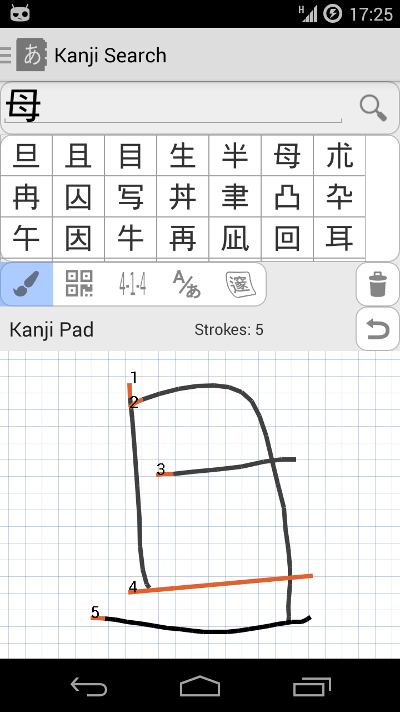

Accurate KanjiPad
Install Aedict 3 and activate the 'Aedict Ultimate' Subscription to gain access to this feature.

Customer Experience
Awesome. Aedicts normal kanjipad barely worked for me. this one here has no problem with my complete ignorance towards stroke order and even finds relatively complex kanji without a problem.
Mathias Dietrich
It's much better than before. Normally I use Google Translate's kanji drawing feature. Still, I value that this one is integrated into aedict3 (less app switching - faster usage) and that it's off-line.
Daniel Sangorrin
MUCH BETTER!!! After the latest update it's much much faster, and quite accurate.
Jason Allen
Kanji Search Demo
What is Aedict Kanjipad Extension?

More Accurate
Provides more accurate kanjipad for Aedict3. It knows a lot more kanjis than the internal kanjipad.
To activate this enhanced kanjipad, simply install the Aedict app and activate the "Aedict Ultimate" subscription. The enhanced kanjipad will be activated automatically.

Not As Strict
Stroke order and stroke count requirements are not as strict as with the internal kanjipad.
To activate the Aedict3 kanjipad Extension
- Please head to Aedict3 Settings, Aedict Ultimate and make sure the "Aedict Ultimate" subscription is activated.
- If not, Aedict3 will assist you with activating of the subscription.
- Head to "Kanji search" and click the "Brush" icon - the extension is activated automatically and will provide search results instead of the internal kanjipad.